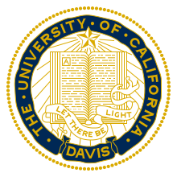

Zitian Guo
Hi, I am Zitian Guo, currently a master student at UC San Diego, advised by Prof. Julian McAuley and Yupeng Hou. I obtained my bachelor degree from Renmin University of China, advised by Prof. Qi Qi.
My research interests focus on Generative Recommendation, Multimodal Representation Learning, Large Language Models, and Information Retrieval.
🔥 I am actively looking for Summer 2026 research opportunities and Fall 2027 Ph.D. positions! If you are looking a highly motivated student for LLM/VLM related projects, please don't hesitate to drop me an email at ztguo@ucsd.edu.
Selected Papers
* Equal contribution. † Corresponding author.
Education


Experience
Beyond Academics
I am a lifelong lover of classical and rock music. You will often find me with a violin or timpani in hand, or collaborating with a symphony orchestra. Playing music is, and always will be, a core part of who I am.
Here are a few highlights from my musical journey: